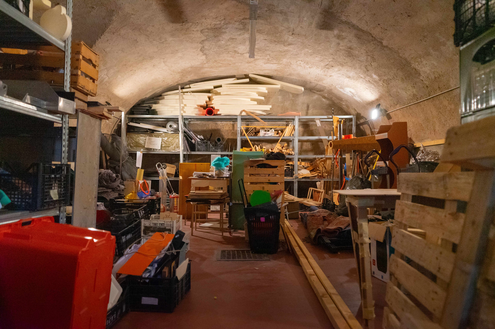
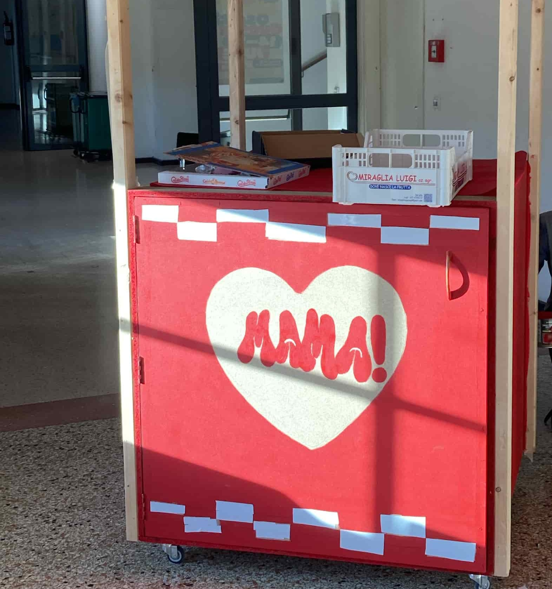
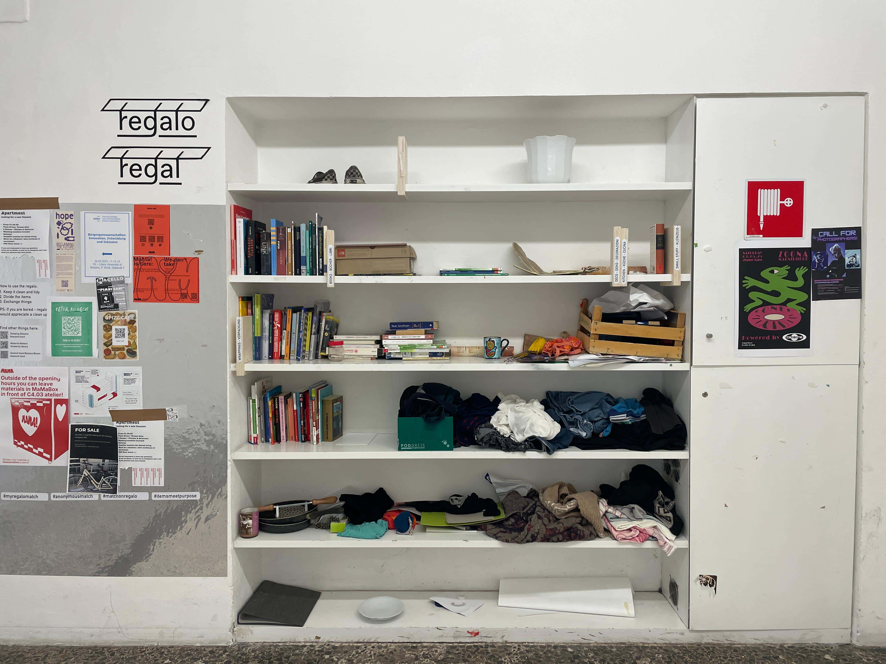
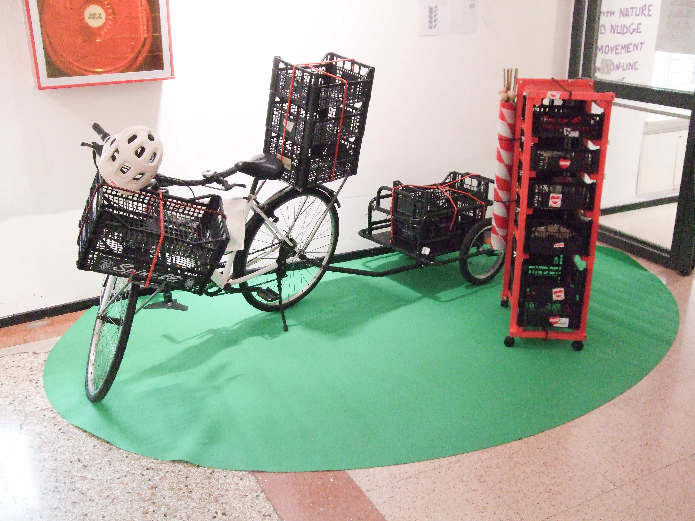
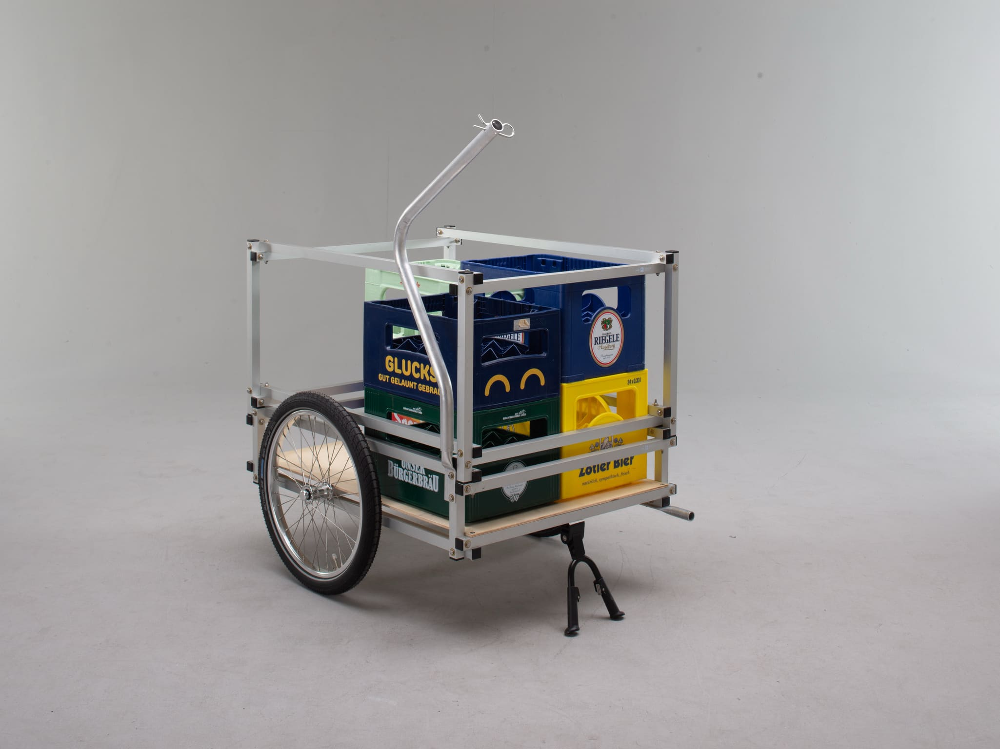
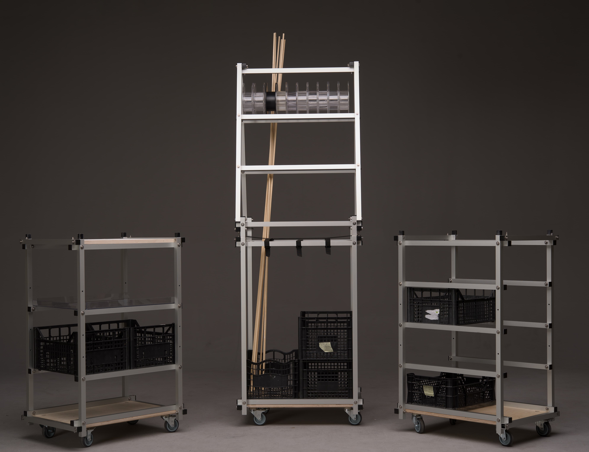
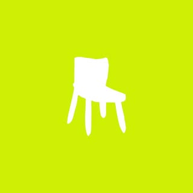
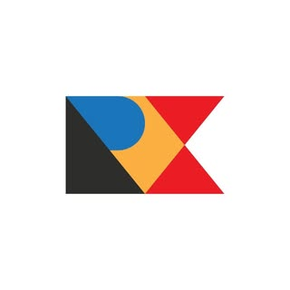
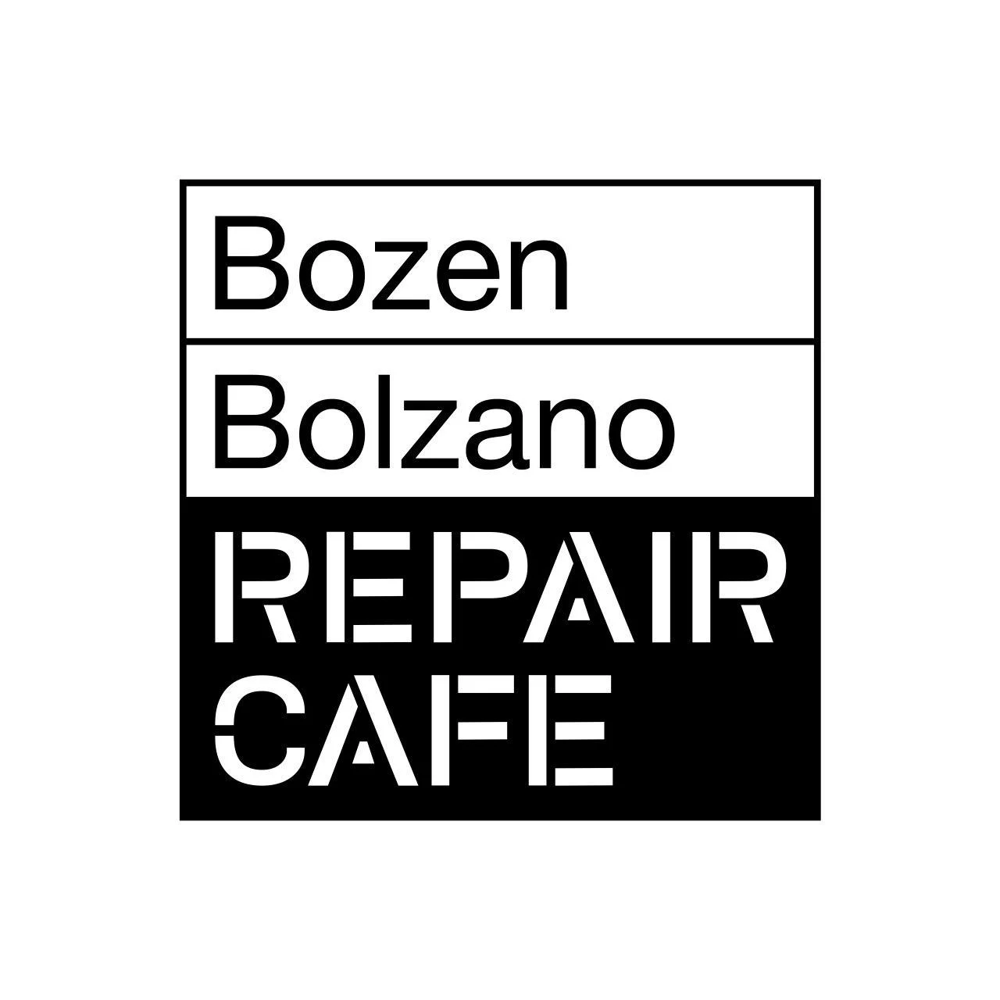
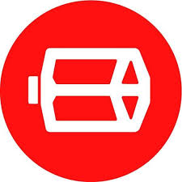

INITIATIVES
A collection of all the tools we have established troughout the years.
MAMA CAVE
Material Bank
Near the workshop, in collaboration with the staff we have established our material bank. Here all the material are stored and organized after being collected.

MAMA BOX
operative 24/24
From an old project, we have created a box capable of storing a bunch of material. People can open it and leave inside materials that they want to donate and that are still usable.

REGALO REGAL
"Trash of someone is the treasure of someone else"
Established before the creation of the MaMa initiative, Regalo Regal allow people two echange a wide range of objects that are still usable. Time by time, we re-arrange the items and tidy up the library.

MAMA BYKE
move stuff around with style
Established before the creation of the MaMa initiative, Regalo Regal allow people two echange a wide range of objects that are still usable. Time by time, we re-arrange the items and tidy up the library.

LILLE LYS
move EVEN MORE stuff around
Developed by Francesco Desimine and Hannes Simon Decker, LILLE LYS is a kart attachable to a byke, capable of moving up to 60 kg of material. Can be used to move installation or tools around the city or even to move your stuff from one apartment to another.

MAMA KARTS
transformables karts for the communities
Togheter with Till Wolfer, part of N55 , we designed 3 transformables karts, usign alluminium profile and a joint system called "XYZ". Student can use them to move material inside the university. They fit in the elevator, so they are suitable to move material down in to the workshop.

FRIENDS
A bunch of other iniatitives you should know here in South Tyrol.
STOOPINGBZ
Everyday is a giveaway

Stooping is an Instagram page founded by two eco-social design student. Trough the STOOPINGBZ page, people can signal furniture or objects lying around the streets in Bolzano using the message function. The admins will post then a picture of the objects and where they are on the map. If you are interested, you can go in the designated location and pick them up (if they are still there).
REX
Material und Dinge

Repair Cafè
We repair togheter!

Pedale Radicale
Byke repairing
